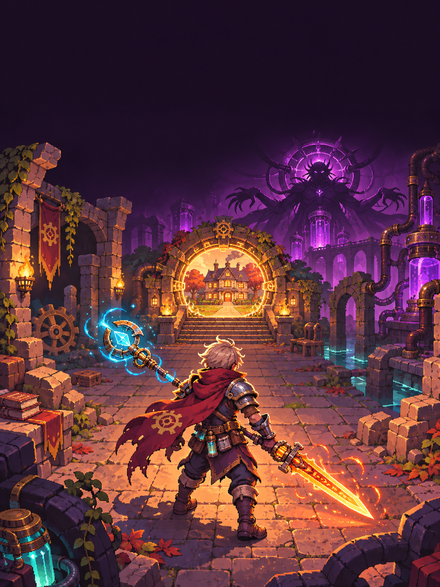
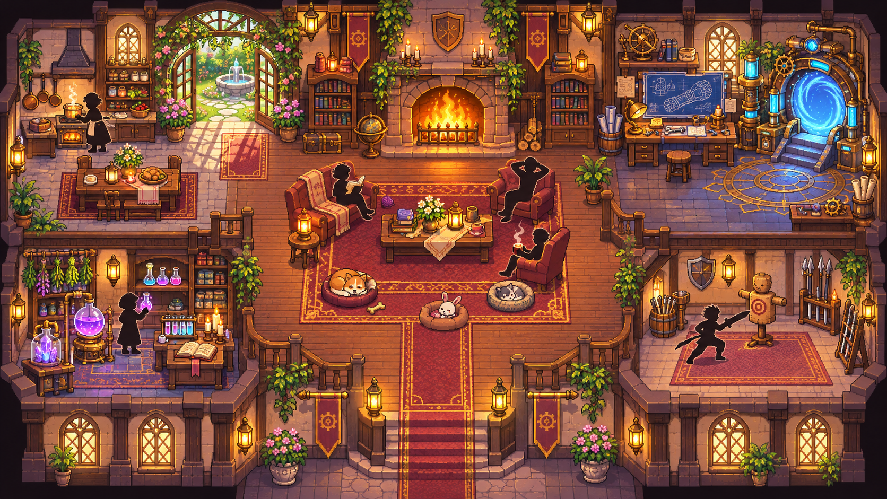
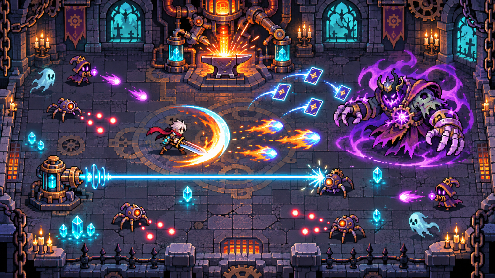

2D top-down action roguelike о рискованных сплавах оружия, тёплом доме между забегами и 24 этажах к финальному сердцу подземелья.
Рабочий документ. Утверждённые решения владельца отмечены ●; дизайнерские предложения для первого среза — ◆.
Игрок выбирает героя, выходит из уютного поместья в опасный 24-этажный забег и собирает две несовместимые вещи, чтобы превратить их в оружие с характером. Победа строится на движении, чтении паттернов и смелых экспериментах у кузницы.
| Столп | Обещание игроку | Правило дизайна |
|---|---|---|
| Эксперимент | «Я хочу проверить эту безумную пару». | Каждый тип оружия имеет боевую роль и теги, поэтому результат читается до выбора, но его вариант всё равно удивляет. |
| Скорость и ясность | «Я умер, но понимаю почему». | Чёткие телеграфы, быстрый перезапуск, умеренная тряска, контрастные редкости и минимум случайной несправедливости. |
| Дом и прогресс | «Даже неудачный забег что-то открыл». | Поместье, дневники, сад, герои, питомцы и кристаллы открывают контент, а не продают силу в середине боя. |
| Шаг | Что ощущает игрок | Обязательное поведение |
|---|---|---|
| 1. Вход | Читает угрозу и рельеф. | Двери и опасные объекты подсвечены; карта открывает комнату без тумана войны. |
| 2. Запечатывание | Понимает, что начался бой. | Решётки закрываются, камера слегка акцентирует арену, стартует волна. |
| 3. Выживание | Двигается, стреляет, делает Dash. | Автонаводка работает по умолчанию; ручной прицел можно включить в настройках. |
| 4. Разрешение | Получает награду и решение. | После волны — лут/валюта/выход; трупы остаются до конца боя как след события. |
| 5. Маршрут | Выбирает безопасное или рискованное направление. | Зачищенные комнаты доступны для возврата; секреты не появляются на мини-карте. |
Финальный босс побеждён: катсцена, достижение, корона в поместье, детали, чертежи и герой-Демон.
Экран «Забег прерван», затем интерактивная дорожка этажей: герой бежит по точкам и падает на достигнутой; босс-этажи — рогатые черепа, финал — красный череп.
| Элемент | Место и поведение |
|---|---|
| HP + броня | Верхний левый угол. Единая длинная полоса: красная часть HP, металлическая броня продолжает её; числа поверх. |
| Мана | Под HP, синяя полоса с числом. Мигает только при попытке выстрелить без маны. |
| Баффы/дебаффы | Компактные иконки под ресурсами; при наведении — название и длительность. |
| Мини-карта | Правый верхний угол. Посещенные — цветные, неизвестные — серые; торговец = золотая сумка, кузница = оранжевый молот. |
| Таймер | Под мини-картой. Скрывается только в настройке «чистый HUD». |
| Навыки | Правый низ. Иконка затенена круговым полупрозрачным кулдауном; ульту нельзя отменить после запуска. |
Ближняя атака даёт короткий hit-stop только цели и оружию. Взрыв — короткая тряска камеры; тяжёлое оружие замедляет ходьбу, но не отнимает управление.
| Категория | Опции |
|---|---|
| Язык | RU, EN, UA, PL, DE, ES; выбор сохраняется сразу. |
| Видео | 30 / 60 / 120 / 144 FPS; Pixel Perfect; Anti-Aliasing; яркость; screen shake. |
| Аудио | Master, музыка, SFX, UI; динамический диапазон. |
| Управление | Клавиши, раскладка геймпада, вибрация, assist aim. |
| Герой | Действие в зацикленной сцене | Силуэт |
|---|---|---|
| Рыцарь | Прикрывает группу щитом, затем делает короткий Dash. | Тяжёлый щит и плащ. |
| Маг | Подсвечивает дорогу висящей молнией. | Посох, высокий воротник. |
| Лучник | Смотрит назад и выпускает стрелу в темноту. | Лук и лёгкий капюшон. |
| Механик | Катит мини-турель, поправляет очки. | Рюкзак, ключ, медные детали. |
| Ведьма | Подбрасывает пузырёк, который становится искрой. | Шляпа и котёл-талисман. |
| Друид | Несёт росток, который кратко вырастает у ног. | Ветки, медвежий амулет. |

Оригинальный визуальный концепт для направления: тёплое дерево, камень, янтарные фонари, инженерная латунь и холодные голубые технологии. Не финальный игровой ассет.
| Герой | Роль / стартовое оружие | Dash | Навык | Ульта / пассивка |
|---|---|---|---|---|
| Рыцарь | Фронтлайн · вечный меч | Щитовой рывок, толкает врагов. | Короткий блок/контрудар. | 10 с бастиона; высокий старт брони. |
| Маг | Контроль · искровой посох | Короткое парение сквозь угрозу. | Цепная молния. | Грозовая сфера; бонус к мане. |
| Вампир | Самолечение · когти | Теневой скачок. | Кровавый захват. | Стая летучих мышей крадёт HP; лечится от добиваний. |
| Ведьма | Хаос · палочка | Метла-рывок. | Бросает 3 случайных зелья вокруг. | Котёл на пол-экрана; зелья имеют усиленный эффект. |
| Некромант | Призыв · костяной жезл | Костяной перекат. | Поднимает скелета из трупа. | Пытается подчинить мини-босса; больше лимит призывов. |
| Лучник | Дальний бой · лук | Отскок назад + выстрел. | Пробивная стрела. | Ливень стрел; бонус к криту на дистанции. |
| Солдат | Огонь · карабин | Боевой перекат. | Осколочная граната. | 10 с режима пулемётчика; контроль отдачи. |
| Механик | Поддержка · гаечный бластер | Реактивный шаг. | Турель: 1 выстрел/с. | Рой дронов; броня восстанавливается быстрее. |
| Друид | Выживание · терновый посох | Лиственный скользящий шаг. | Корни удерживают врага. | 30 с медведя; находки еды эффективнее. |
| Эльф | Точность · лунный лук | Ветровое скольжение + малый heal. | Метка уязвимости. | Лунный круг: стрелы рикошетят; манёвренность выше. |
| Дворф | Ближний бой · секира | Плечевой толчок. | Сейсмо-удар. | Берсерк; тяжёлые удары и сопротивление отбрасыванию. |
| Питомец | Функция | Поведение |
|---|---|---|
| Собака | Агрит ближайшую угрозу. | Не умирает; если отстал — телепортируется. |
| Ящерица | Кусает и накладывает яд. | Приоритет — цель игрока. |
| Птица | Пикирует над стенами и помечает дальнюю цель. | Не приносит аптечки; игнорирует рельеф. |
| Рептилия | Раз в 18 с даёт щит на 1 урон. | Пассивная защита, не нажимает рычаги. |
| Барашек | Периодически оставляет ману. | Окрас меняется косметически. |
| Ресурс | Время / цена | Результат |
|---|---|---|
| Морковь | 24 мин роста | Суп: +1 максимальное HP на следующий забег. |
| Гриб | 32 мин | Тоник: +8% шанс крита в следующем забеге. |
| Тыква | 50 мин | Рагу: +1 броня на старт. |
| Ягоды | 18 мин | Сок: стартовая мана +15. |
| Мясо (холодильник) | 10 / 18 / 30 золота | Малое / среднее / большое блюдо с теми же временными эффектами. |
| Статус | Источник | Эффект и контригра |
|---|---|---|
| Горение | Огонь, лавовая шахта | Урон по броне/HP во времени; не складывается бесконечно, обновляет длительность. |
| Яд | Болото, ящерица, оружие | Периодический урон; колодец/очищение/святилище могут снять. |
| Заморозка | Лёд, бочки | Короткая задержка движения; боссы имеют высокий резист. |
| Отметка | Эльф, птица | Цель получает больше точного урона и лучше видна на мини-карте. |
| Проклятие | Риск-комнаты | Сильный плюс и заметный минус; снимается в святилище. |

Оригинальный концепт VFX: кузница — понятная точка решения; элементальные следы и снаряды имеют высокий контраст.
| Неподвижные правила ● | Решение |
|---|---|
| Количество | Ровно два оружия. Три оружия и обратная разборка исключены. |
| Стоимость | Бесплатно; плата — потеря обеих исходных вещей и риск результата. |
| Где | Специальные кузницы в подземелье и подготовительная кузница на 24-м этаже. |
| Ресурсы | Если гибрид стреляет/пускает волну, он тратит ману. Базовое оружие героя всё ещё бесплатно, пока не заменено. |
| Редкость | Визуальный цвет смешивает оба компонента; редкость гибрида считается отдельно и не обязана расти. |
| Плохие результаты | Есть: сильный эффект может приходить с минусом, но результат обязан быть работоспособным и интересным. |
Оружие описывается не уникальными парными рецептами, а тегами. Генератор берёт шасси первого предмета и присоединяет к нему модификатор второго; затем выбирает один из трёх согласованных паттернов.
| Слой | Примеры | Что определяет |
|---|---|---|
| Шасси | меч, посох, пистолет, арбалет, базука, коса | Анимация, дальность, базовая скорость, рука героя. |
| Доставка | взмах, луч, снаряд, веер, парабола, канал | Как эффект достигает врага. |
| Элемент | огонь, лёд, яд, молния, кровь, металл | Статус, цвет, VFX, часть названия. |
| Модификатор | дрель, карты, динамит, турель, рикошет | Уникальный поворот механики и возможный минус. |
| Пара | Вариант A: надёжный | Вариант B: риск | Вариант C: безумный |
|---|---|---|---|
| Огненный посох + меч | Пламенный клинок: взмах пускает фаербол. | Печь-двуруч: удар оставляет огненный круг, медленнее. | Кометная сабля: рывок выпускает 3 снаряда, дороже мана. |
| Посох + лазер | Лазерный жезл: импульсы через 0.2 с. | Призма: луч рикошетит от стен. | Солнечный бур: канал, но замедляет владельца. |
| Меч + динамит | Взрывной меч: детонация на конце взмаха. | Сапёрская клеймора: мина после Dash. | Фитиль-клинок: мощнее со временем, самоповреждение в упор. |
| Пистолет + бур | Сверлящие пули, 1 пробитие. | Шнек-револьвер: вращающийся диск держится на цели. | Тоннельная пушка: пробивает стены, высокий расход. |
| Базука + карты | Веер взрывных карт. | Джокерная ракета: самонаводится, может сменить цель. | Казино-артиллерия: случайный залп, возможен пустой выстрел. |
| Арбалет + пулемёт | Автоматический арбалет. | Гвоздемёт: растёт разброс и отдача. | Карусель болтов: очередь по кругу, стояние на месте. |
2 активных слота. Стартовое оружие героя вечно, но его можно сбросить и заменить. Поднятие нового оружия открывает сравнение: заменить левый, правый, оставить на земле.
Оружия врагов не выпадают: они используют собственные атаки. Лут приходит из комнат, сундуков, автоматов, колодцев, боссов и пьедесталов.
мечкинжалсекиракосапистолетдробовикпулемётснайперкалукарбалетпосохбазукакартысюрикеныдинамитбур
| Цвет ауры | Тир | Смысл |
|---|---|---|
| Серая | Common | Простая база, хороший компонент. |
| Синяя | Rare | 1 выразительный тег. |
| Фиолетовая | Epic | 2 синергичных тега. |
| Жёлтая | Legendary | Сильная механика, заметный стиль. |
| Радужная | Mystic | Редкий эффект, меняющий маршрут боя. |
| Красная | Mythic | Высокий риск и мощь. |
| Белое золото | Special | Босс/событие/уникальный чертёж. |
Легендарный шанс в колодце: 1.5%; Mythic: 0.25%. Каждая монета стоит 1 золото. Бомба: 7%; пустышка: 18%; остальное — золото, хил, мана, редкость или временный бафф. Эти значения калибруются после первых 100 тестовых забегов.
| Этажи | Функция | Правила |
|---|---|---|
| 1–4 | Обучить движению, луту, комнате и кузнице. | 6–9 комнат; минимум один безопасный источник восстановления; первый гибрид желательно гарантировать к 4-му этажу. |
| 5 / 10 / 15 / 20 | Проверка билда. | Босс биома, чертёж/особое оружие, частичное восстановление HP и маны, выбор 1 из 3 пассивок; следующий биом случайный. |
| 6–19 | Расширение билда и риск. | Плотность врагов растёт; к 19-му этажу 10–13 комнат; есть элиты и комнаты испытаний. |
| 21–23 | Подготовка к финалу. | Обычные комнаты финального биома; больше шансов на кузницу, очистку и экономику. |
| 24 | Пять точек принятия решения. | 1) подготовка, 2) торговец, 3) алтарь/риск, 4) короткий боевой тест, 5) финальный босс. |
| Биом | Палитра / музыка | Опасность | Босс-идея |
|---|---|---|---|
| Замок | Бордовый, золото, орган | Стрелы из стен, рыцари, щиты. | Гранд-Рыцарь: конный рывок, вихрь клинков, веер снарядов. |
| Пустыня | Охра, лазурь, сухие барабаны | Кактусы колют, песчаные волны. | Песчаный Архонт зарывается, оставляет ловушки. |
| Ледяной лес | Циан, белый, колокольчики | Локальный скользкий лёд, сосульки. | Рогатая Вьюга: ледяные дорожки и падение шипов. |
| Каменные горы | Сланец, янтарь, барабаны | Падающие булыжники, узкие ходы. | Камнеклык: таран и обвал укрытий. |
| Ядовитое болото | Зелёный, фиолетовый, вязкий эмбиент | Слизь, яд, медленная вода. | Матка Тины делит арену на безопасные островки. |
| Механический завод | Медь, бирюза, индустриальный lofi | Конвейеры, прессы, турели. | Цеховой Титан меняет направления лент. |
| Вулканическая шахта | Чёрный, оранжевый, низкие струны | Лава, огненные выбросы. | Горновой Дракон дышит секторами. |
| Некрополь | Индиго, кость, хор | Возрождение некоторых врагов. | Король Прахов призывает скелетов. |
| Затопленная библиотека | Бирюза, золото, арфа | Вода замедляет, книги-мины. | Архивариус меняет страницы-стены. |
| Сад Часов | Изумруд, бронза, тикание | Маятники и циклы ускорения. | Садовник Времени ставит замедляющие круги. |
| Зеркальная обсерватория | Серебро, фиолетовый, синт | Луч отражается от зеркал. | Астромант создаёт копии траекторий. |
| Ржавый порт | Сине-серый, медь, морской эмбиент | Скользкие мостки и пар. | Капитан Котла пускает паровые залпы. |
| Сердце Подземелья | Чёрный, красный, хор+оркестр | Финальные сочетания прежних угроз. | Архонт Франкен — финальный четырёхфазный босс. |
бойторговецлутрумстатуяавтоматсундукклеткаколодецэлитаиспытаниеказиносвятилищекузницасекрет
| Тип | Поведение |
|---|---|
| Торговец | 5 предметов. Атака запускает бой-минибосса; награда есть, но этот путь должен быть морально и экономически сомнителен. |
| Лутрум | Бесплатное оружие на пьедестале; после выбора возможна ловушка с закрытыми дверьми. |
| Статуя | Молитва за 12 золота, бафф на 5 этажей. Рыцарь: +2 броня. |
| Мимик | Чуть дышащий замок, редкое моргание и следы когтей — заметно внимательному игроку. |
| Секрет | Невидим на карте; стену выдаёт лёгкая рябь/искажение света. Вход — пройти сквозь неё, без взрыва. |
| Архетип | Что делает | Контригра |
|---|---|---|
| Ближник | Давит телом; без Dash, кроме боссов. | Держать дистанцию, Dash сквозь, контролить корнями. |
| Стрелок | Стреляет без упреждения. | Движение поперёк траектории, укрытие. |
| Шаман | Лечит и баффает союзников. | Приоритетная цель; видимый канал лечения. |
| Бронированный | Слабая точка/спина. | Обойти Dash, использовать рикошет или зону. |
| Камикадзе | Взрывается при контакте/смерти. | Оттолкнуть, взорвать на врагах, не стоять рядом. |
| Летающий | Игнорирует стены и часть рельефа. | Точная стрельба, автонаводка. |
| Элита | Тот же враг + аура: синяя 1.5×, фиолетовая 2×, красная 3× статы. | Опционально; награда выше обычной. |
| Ресурс | Получение | Трата |
|---|---|---|
| Кристаллы | Боссы, достижения, финал, daily. | Открытие классов, питомцев, звёзды героев, комнаты поместья. |
| Чертежи | Боссы, редкие события. | Добавляют оружие в будущий пул; крафт требует детали. |
| Детали | Элиты, финал, демонтаж. | Открывают крафтовые образцы в мастерской. |
| Записи дневника | Первая находка/победа. | Лор в 2–4 строки, без боевой силы. |
| Категория | Можно открыть | Нельзя продавать как силу |
|---|---|---|
| Герои | Часть за кристаллы, часть за достижения/сюжет. | Не закрывать основную боевую мощь платежом. |
| Питомцы | Кристаллы, достижения, косметика. | Не создавать обязательного «лучшего» питомца. |
| Скины | Будущий слой, меняет VFX/визуал. | Никаких скрытых статов. |
| Комнаты | Сад и лаборатория ремонтируются мета-ресурсом. | Не прятать базовое управление за прогрессом. |
#F5B94D дом/награда#48D6ED мана/технологии#BD75FF элита/тайна#FF7B3E огонь/крит#EF5264 опасность
| Место | Направление |
|---|---|
| Меню и поместье | Уютный lofi, камин, редкие механические клики. |
| Биомы | Один музыкальный мотив, оркестровка меняется по миру. |
| Босс | Тема биома ускоряется на второй фазе. |
| 24-й этаж | Эпичный оркестр поверх знакомого lofi-мотива. |
| UI | Кнопка — подъём и мягкий click; редкость — короткий, не раздражающий аккорд. |
| Система | Ответственность | Первый проверяемый результат |
|---|---|---|
| Input + персонаж | Движение, прицел, Dash, геймпад. | Рыцарь проходит комнату и получает контактный урон. |
| Бой | HP/броня/мана, попадания, статусы, пул объектов. | 10 врагов и 100 снарядов без заметного проседания FPS. |
| Оружие | Конфигурации, 2 слота, редкость, генератор сплава. | Меч + огненный посох создают 3 выбираемых варианта. |
| Комнаты | Граф комнат, двери, волны, награды. | 6–9 комнат с возвратом и одной секретной. |
| Мета | Поместье, сохранение, кристаллы, дневник. | Поражение сохраняет кристаллы и открывает запись. |
| Контент | Биомы, враги, боссы, UI/VFX/SFX. | 1 биом, 1 босс, 3 героя, 5 оружий, 1 питомец. |
| Критерий | Проверка |
|---|---|
| Бой понятен | Игрок видит телеграф, может Dash и понимает смерть. |
| Сплав интересен | Три результата показывают разные стили, а не +5% урона. |
| Ран закончен | Есть старт, 6–9 комнат, босс, победа/смерть и экран статистики. |
| Сохранение работает | Кристаллы и запись дневника остаются после перезапуска. |
| Производительность | 60 FPS на целевом ПК в худшей комнате с пулом снарядов. |
Продолжаем FrankenArms. Прочитай AGENTS.md, PROJECT_CONTEXT.md, SESSION_HANDOFF.md и FrankenArms_GDD_RU.html. Затем изучи репозиторий, не удаляй старый код без бэкапа и предложи план вертикального среза.Документ создан на основе /Users/user/Desktop/GDD.md. Концепт-иллюстрации сгенерированы специально для FrankenArms и лежат рядом в FrankenArms_GDD_Assets/. Документ можно открыть в браузере и напечатать в PDF: каждая секция уже размечена как отдельная страница A4.